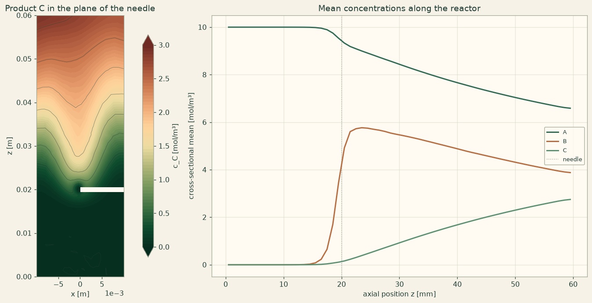
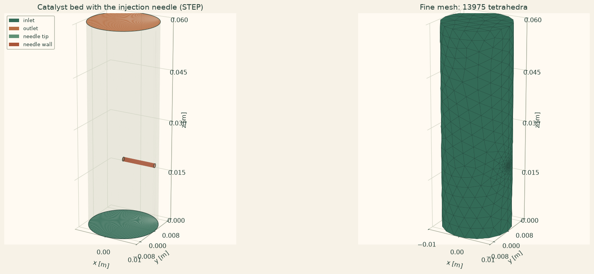

Docs › Examples › Mixing two feeds in a porous catalytic reactor
Reacting flow in porous media · 3D
Mixing two feeds in a porous catalytic reactor
A side needle injects the second reactant into a packed bed. Follow the plume downstream and measure how much reacts before leaving the bed.
Run locally with OneSimulation. The example downloads are free. Running them requires an activated runtime. Runtime Alpha 0.2.1a8 · CPython 3.13 on macOS (Apple Silicon), Ubuntu 22.04 (x86-64), and Windows x64. Installation and activation · View pilot plans. Scope of the reference checks.


What it computes
The STEP model resolves the bed around the needle. A prescribed jet at its tip feeds a coupled Brinkman flow and three-species transport model. Two meshes test the volume flow, the species flux balances and the integrated reaction rate.
What it checks
The fine mesh converts 29.34% of reactant A, compared with 29.06% on the coarse mesh and 31.29% for ideal premixed plug flow. The outlet volume flow is within 0.65% of the two feeds. The largest fine-mesh species imbalance is 1.18% of the B feed.
Geometry
Save the STEP file porous_catalytic_reactor_injection_needle.step next to the notebook before running it.


The geometry script
The script porous_catalytic_reactor_injection_needle_geometry.py builds the geometry with the CAD objects of OneSimulation and writes the file. Change a dimension there, run it, and run the notebook again.
"""Geometry of the OneSimulation example "Porous catalytic reactor with an injection needle".
Builds a tubular reactor, 20 mm in diameter and 60 mm long, filled with a porous catalyst bed, and
the injection needle (1.2 mm in diameter) that enters through the side wall 20 mm behind the inlet
and ends on the reactor axis, with the CAD objects of OneSimulation. The needle is cut out of the
bed; the faces inlet, outlet, wall, needle_tip and needle_wall are named and the part is written to
porous_catalytic_reactor_injection_needle.step.
"""
import numpy as np
from onesim.cad.d3 import Cylinder
mm = 1e-3
radius, length, needle_radius, needle_position = 10 * mm, 60 * mm, 0.6 * mm, 20 * mm
tube = Cylinder(radius=radius, length=length)
needle = Cylinder(radius=needle_radius, length=radius + 2 * mm).rotated((0, 1, 0), np.pi / 2).moved((0, 0, needle_position))
bed = tube - needle
bed = bed.grouped(
inlet=bed.select(faces=lambda face: face.kind == "plane" and abs(face.center[2]) < 1e-9),
outlet=bed.select(faces=lambda face: face.kind == "plane" and abs(face.center[2] - length) < 1e-9),
wall=bed.select(faces=lambda face: face.kind == "cylinder" and abs(face.radius - radius) < 1e-9),
needle_tip=bed.select(faces=lambda face: face.kind == "plane" and abs(face.center[0]) < 1e-9 and abs(face.center[2] - needle_position) < 1e-6),
needle_wall=bed.select(faces=lambda face: face.kind == "cylinder" and abs(face.radius - needle_radius) < 1e-9),
)
bed.save("porous_catalytic_reactor_injection_needle.step")The notebook
The complete notebook, cell by cell. Run it to produce the figures and the comparison printout.
Feeding the second reactant of a fast reaction through a needle into a packed bed keeps the two reactants apart until they meet in the catalyst, but the reaction then only proceeds where the injected plume mixes with the main stream. In the bed the flow obeys the Brinkman equations, the Navier-Stokes equations with the Darcy drag of the porous matrix,
The needle bore is represented by a smooth velocity profile at its exit. The three species are carried by the superficial velocity \(\mathbf u\), dispersed and converted by the second-order reaction \(\mathrm A+\mathrm B\to\mathrm C\) with the rate \(r=k\,c_\mathrm Ac_\mathrm B\),
| face | flow | species |
|---|---|---|
inlet | smooth inlet, mean 1 mm/s | feed \(c_\mathrm A=10\) mol/m³ |
needle_tip | smooth jet, mean 20 mm/s | feed \(c_\mathrm B=100\) mol/m³ |
outlet | traction free | convective outflow |
wall, needle_wall | no slip | no flux |
Both prescribed profiles vanish in the outer 10 % of their port radii, joining the no-slip walls continuously. Their cross-sectional means set the volume flows.
Setup. Bed permeability \(\kappa=10^{-9}\) m², water (\(\rho=1000\) kg/m³, \(\mu=1\) mPa s), effective dispersion \(D=10^{-6}\) m²/s, \(k=2\cdot10^{-3}\) m³/(mol s). The bed comes from the CAD file porous_catalytic_reactor_injection_needle.step, written by porous_catalytic_reactor_injection_needle_geometry.py with the CAD objects of OneSimulation.
Reference. Exact balances: the outflow equals the two feeds, and for each species the feed minus the outflow equals the amount the reaction converts, \(\int r\,\mathrm dV\) for A and B and \(-\int r\,\mathrm dV\) for C. For comparison, ideal plug flow after instantaneous mixing at the needle gives \(X=1-\dfrac{a-b}{a-b\,e^{-k(a-b)\tau}}\) with the mixed feed concentrations \(a\), \(b\) and the residence time \(\tau\) behind the needle (O. Levenspiel, Chemical Reaction Engineering, 3rd ed., Wiley 1999, ch. 5).
import numpy as np
from onesim.cad.d2 import Plane
from onesim.cad.exchange import load
from onesim.materials import NewtonianFluid
from onesim.meshing import DistanceRefinement, TetrahedralMesher
from onesim.numerics import Numerics
from onesim.numerics.coupled_systems import StationaryPartitionedCoupling
from onesim.numerics.fem import FiniteElement, Lagrange, TaylorHood
from onesim.numerics.field_transfer import FieldInterpolation
from onesim.numerics.linear import SparseDirect
from onesim.numerics.nonlinear import FixedPoint, Newton
from onesim.physics.chemistry import DanckwertsInflow, ReactionIR, SpeciesOutflow, SpeciesTransport, TransportSpecies
from onesim.physics.hydrodynamics import FixedVelocity, FlowTraction, IncompressibleNavierStokes, NoSlipWall
from onesim.results.derived import derived_field
from onesim.results.integration import mean_value
from onesim.simulation import Problem, Simulation
from onesim.simulation.field_connections import FieldCoupling
from onesim.visualization import plots, theme
theme.set()Geometry and mesh
load returns the bed with its named faces. Tetrahedra of 4.5 mm and 3.5 mm, refined towards the needle and down to 0.32 mm and 0.23 mm at its tip, where the injected jet enters; cells with all corners on walls are split so that the Taylor-Hood flow elements stay stable.
bed = load("porous_catalytic_reactor_injection_needle.step")
face = bed.boundaries
radius, length = bed.size[0] / 2, bed.size[2]
needle_radius, needle_position = 0.6e-3, 20e-3
sizes = {"coarse": (4.5e-3, 0.95e-3, 0.32e-3), "fine": (3.5e-3, 0.75e-3, 0.23e-3)}
meshes = {name: TetrahedralMesher(target_size=h, split_boundary_cells=True, refinements=(
DistanceRefinement(source=face.needle_wall, target_size=hn, far=2.5e-3, far_size=h),
DistanceRefinement(source=face.needle_tip, target_size=ht, far=0.85e-3, far_size=hn))).generate(bed)
for name, (h, hn, ht) in sizes.items()}
view = plots.Camera(elevation=20, azimuth=-60)
fig = plots.figure(1, 2, size=(16, 6))
plots.geometry(bed, selection={"inlet": face.inlet, "outlet": face.outlet, "needle tip": face.needle_tip, "needle wall": face.needle_wall},
labels=False, camera=view, title="Catalyst bed with the injection needle (STEP)", ax=fig[0])
plots.mesh(meshes["fine"], groups=("all",), legend=False, camera=view, title=f"Fine mesh: {meshes['fine'].cell_count} tetrahedra", ax=fig[1])
plots.show()Model
IncompressibleNavierStokes with porous_resistance \(=\mu/\kappa\) solves the Brinkman flow with Taylor-Hood tetrahedra; FieldCoupling hands the velocity to the species as their advecting velocity (convective form, which creates no species from the small discrete divergence of the interpolated velocity). The reaction is a mass-action ReactionIR; Newton's method solves both nonlinear problems.
permeability, viscosity, inlet_speed, needle_speed = 1e-9, 1e-3, 1e-3, 20e-3
feed_a, feed_b, dispersion, rate_constant = 10.0, 100.0, 1e-6, 2e-3
water = NewtonianFluid(density=1000.0, dynamic_viscosity=viscosity)
core = 0.9
def profile(r_squared, port_radius, mean_speed):
return 3 * mean_speed / core**2 * np.maximum(1 - r_squared / (core * port_radius)**2, 0)**2
inlet = lambda x, y, z: np.column_stack((0 * x, 0 * x, profile(x*x + y*y, radius, inlet_speed)))
jet = lambda x, y, z: np.column_stack((-profile(y*y + (z - needle_position)**2, needle_radius, needle_speed), 0 * y, 0 * y))
reaction = ReactionIR("A+B->C", {"A": 1, "B": 1}, {"C": 1}, {"kind": "constant", "unit": "m^3/mol/s", "value": rate_constant})
results = {}
for name, mesh in meshes.items():
print(f"Solving {name} mesh with {mesh.cell_count} tetrahedra", flush=True)
flow = IncompressibleNavierStokes(domain=bed.volume, material=water, porous_resistance=viscosity / permeability)
species = SpeciesTransport(domain=bed.volume, reactions=(reaction,), advection_form="convective",
species=tuple(TransportSpecies(s, diffusivity=dispersion) for s in ("A", "B", "C")))
problem = Problem(name="Porous reactor", geometry=bed, physics=(flow, species), boundary_conditions=(
FixedVelocity(physics=flow, boundary=face.inlet, value=inlet),
FixedVelocity(physics=flow, boundary=face.needle_tip, value=jet),
NoSlipWall(physics=flow, boundary=face.wall | face.needle_wall),
FlowTraction(physics=flow, boundary=face.outlet, value=(0.0, 0.0, 0.0)),
DanckwertsInflow(physics=species, boundary=face.inlet, concentration={"A": feed_a}),
DanckwertsInflow(physics=species, boundary=face.needle_tip, concentration={"B": feed_b}),
SpeciesOutflow(physics=species, boundary=face.outlet)),
couplings=(FieldCoupling(source=flow.velocity, target=species.advecting_velocity, transfer=FieldInterpolation()),))
newton = Newton(linear_solver=SparseDirect(), absolute_tolerance=1e-14, relative_tolerance=1e-10)
solved = Simulation(problem=problem, mesh={flow: mesh, species: mesh},
numerics={flow: Numerics(spatial=FiniteElement(element=TaylorHood()), nonlinear_solver=newton, initial_guess={flow.velocity: (0.0, 0.0, 0.0)}),
species: Numerics(spatial=FiniteElement(element=Lagrange(order=2)), nonlinear_solver=newton)},
coupling_solver=StationaryPartitionedCoupling(stationary_systems=(flow, species), iteration=FixedPoint(
relative_tolerance=1e-8, absolute_tolerance=1e-12, maximum_iterations=4))).solve_stationary()
results[name] = {"velocity": solved.field(flow.velocity), **{s: solved.field(species.field(s)) for s in ("A", "B", "C")}}Balances and conversion
Volume flows from the velocity over the faces, molar flows of the species from their boundary fluxes (positive leaving), and the converted amount \(\int k\,c_\mathrm Ac_\mathrm B\,\mathrm dV\) from the solved fields.
flow_in, flow_needle = inlet_speed * np.pi * radius**2, needle_speed * np.pi * needle_radius**2
print(f"volume flows: inlet {flow_in * 1e9:.2f} mm³/s, needle {flow_needle * 1e9:.2f} mm³/s")
for name, field in results.items():
outflow = field["velocity"].integrate(boundary=face.outlet, normal_component=True).value
converted = derived_field(field["A"], lambda a, points: rate_constant * np.ravel(a) * np.ravel(field["B"].evaluate(points)),
name="rate", unit="mol/m^3/s").integrate().value
net = {s: -sum(field[s].boundary_flux(getattr(face, side)) for side in ("inlet", "needle_tip", "outlet")) for s in ("A", "B", "C")}
fed_b = -field["B"].boundary_flux(face.needle_tip)
print(f"{name:6s} ({meshes[name].cell_count} tets): outflow / feeds = {outflow / (flow_in + flow_needle):.5f}; converted {converted * 1e6:.4f} µmol/s; "
f"balance errors (feed - out - converted) / feed of B: A {(net['A'] - converted) / fed_b:+.2%}, B {(net['B'] - converted) / fed_b:+.2%}, "
f"C {(net['C'] + converted) / fed_b:+.2%}; conversion of A {converted / (feed_a * flow_in):.4f}")
mixed_a, mixed_b = feed_a * flow_in / (flow_in + flow_needle), feed_b * flow_needle / (flow_in + flow_needle)
residence = np.pi * radius**2 * (length - needle_position) / (flow_in + flow_needle)
plug_flow = 1 - (mixed_a - mixed_b) / (mixed_a - mixed_b * np.exp(-rate_constant * (mixed_a - mixed_b) * residence))
print(f"ideal plug-flow comparison: mixed feed a = {mixed_a:.3f}, b = {mixed_b:.3f} mol/m³, residence time {residence:.1f} s, conversion of A {plug_flow:.4f}")Figure
The product C in the vertical plane through the needle, and the area means of A, B and C over cross-sections along the reactor (mean_value on cutting planes).
fine = results["fine"]
z = np.linspace(0.5e-3, length - 0.5e-3, 60)
means = {s: [mean_value(fine[s], plane=Plane(origin=(0, 0, zz), normal=(0, 0, 1))) for zz in z] for s in ("A", "B", "C")}
fig = plots.figure(1, 2, size=(17, 6))
plots.section(fine["C"], plane=Plane(origin=(0, 1e-6, 0), normal=(0, 1, 0)), limits=(0, 3.0), contours=8,
label="c_C [mol/m³]", title="Product C in the plane of the needle", ax=fig[0])
plots.line(y={s: (z * 1e3, means[s]) for s in ("A", "B", "C")}, vlines={"needle": needle_position * 1e3},
xlabel="axial position z [mm]", ylabel="cross-sectional mean [mol/m³]", title="Mean concentrations along the reactor", legend="center right", ax=fig[1])
plots.show()Going further
Move the needle tip off the axis or add a second needle and compare the conversions. A faster reaction confines the zone of product formation to the mixing layer around the plume.